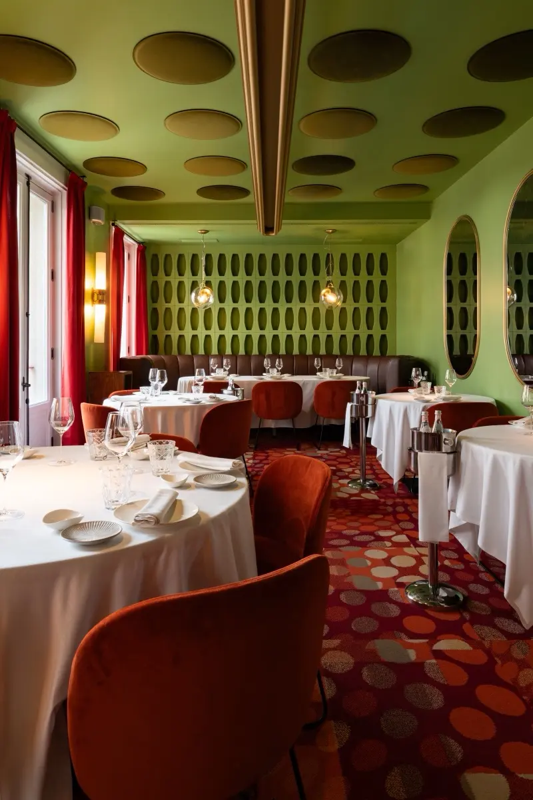

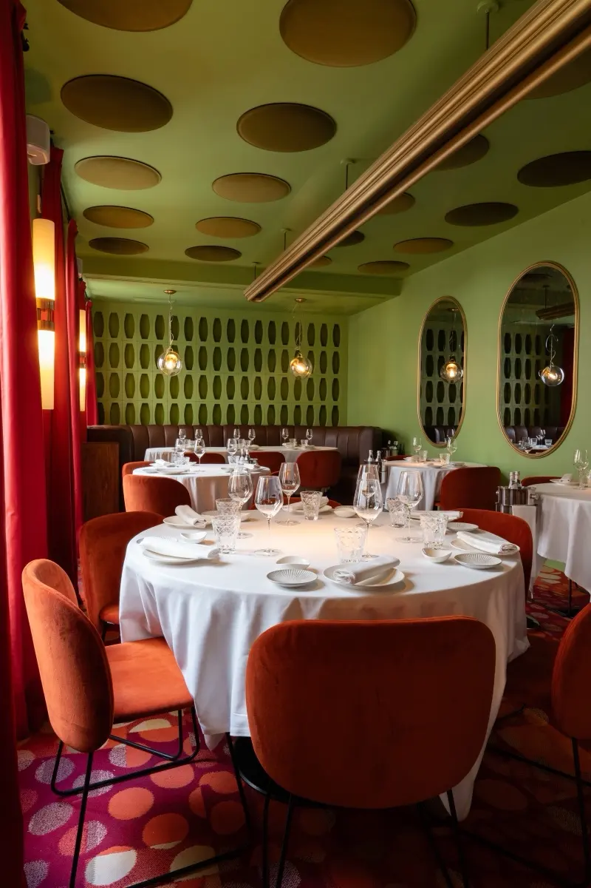


La barra · Cocina de siempre
El lado más espontáneo del chef Gianni Pinto. Cocina italiana auténtica, generosa y para compartir.
Noi · «nosotros» en italiano
Recoletos 6 · Madrid
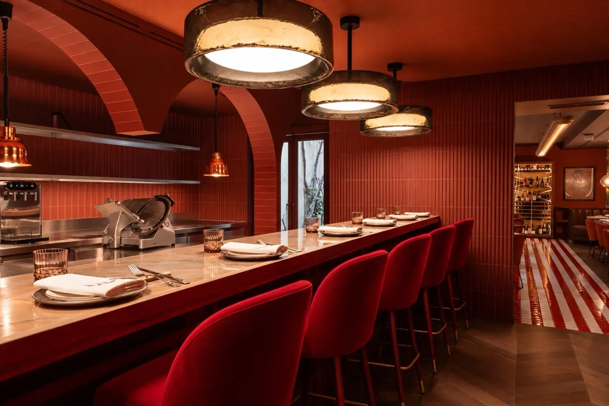
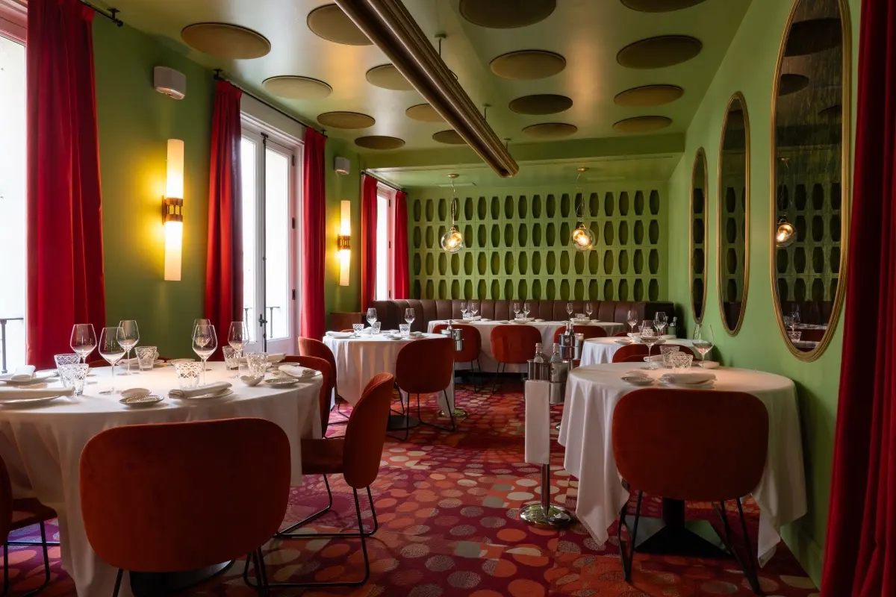
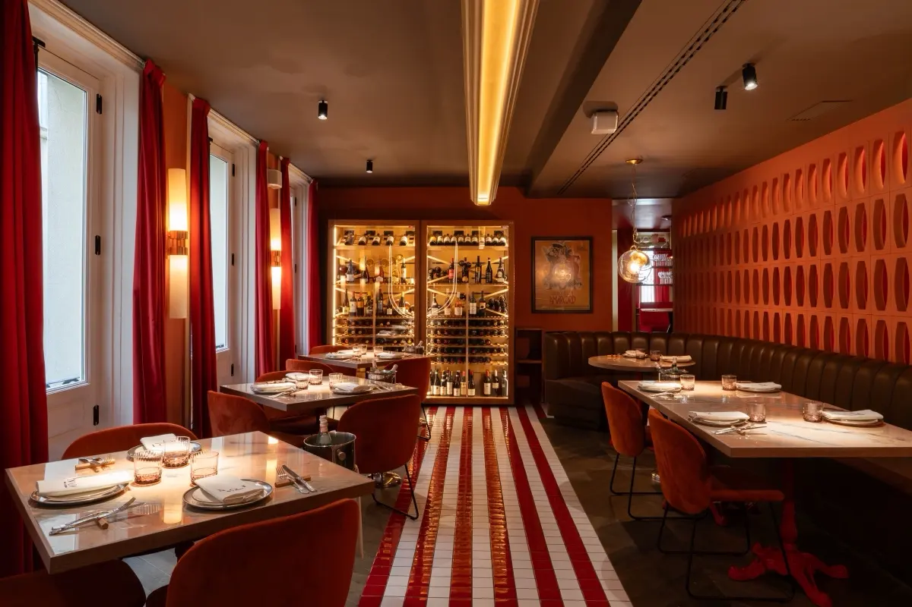
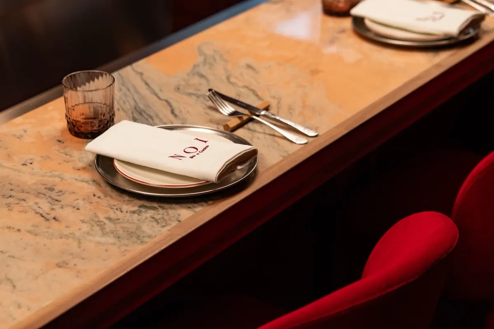

NOI Ristorante · Sala verde
NOI Ristorante es la expresión más creativa y gastronómica de NOI. Una cocina italiana contemporánea, donde la tradición se encuentra con la innovación, la técnica y la sorpresa. Una experiencia sofisticada, pero cercana, que celebra el producto, la creatividad y el placer de disfrutar de la alta cocina sin formalidades innecesarias.
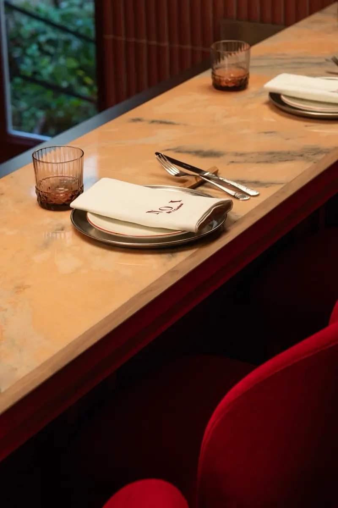
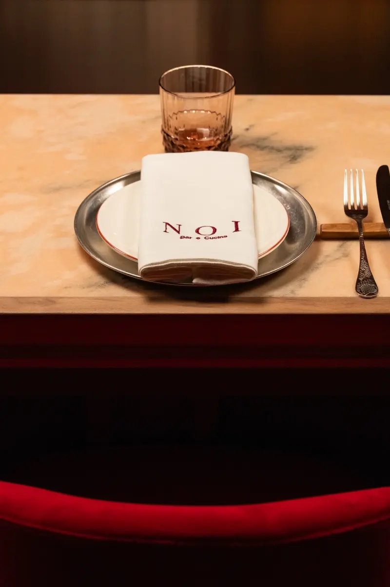
NOI Bar e Cucina · La barra
NOI Bar e Cucina representa el lado más espontáneo del chef Gianni Pinto. Una cocina italiana auténtica, generosa y sin artificios, donde las recetas de siempre cobran vida a través de un producto extraordinario. Un espacio para compartir, disfrutar sin prisas y sentirse como en casa.
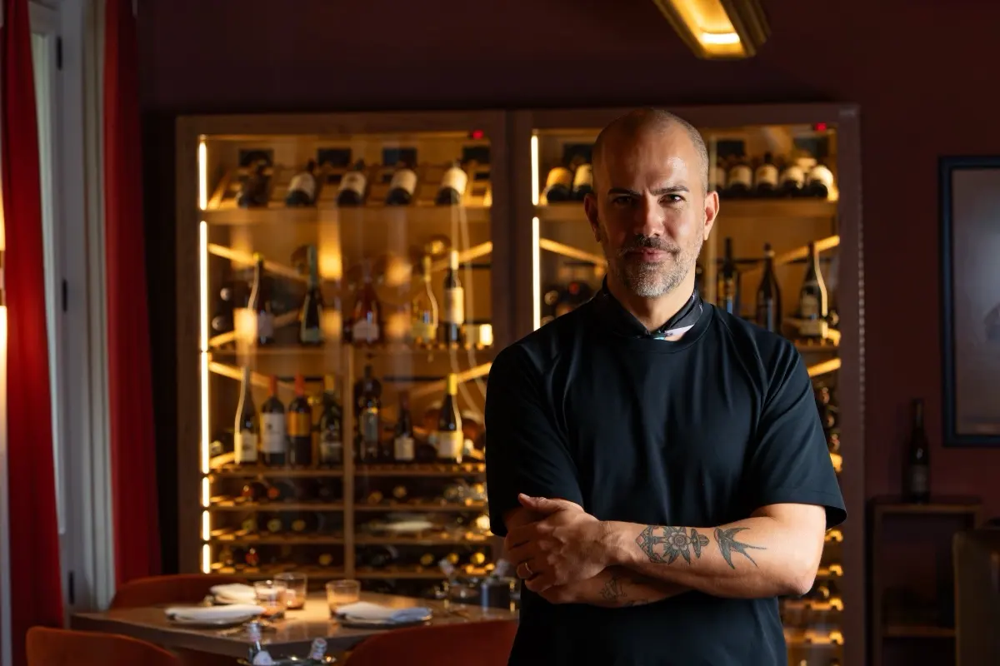
Dos cocinas, una misma firma.
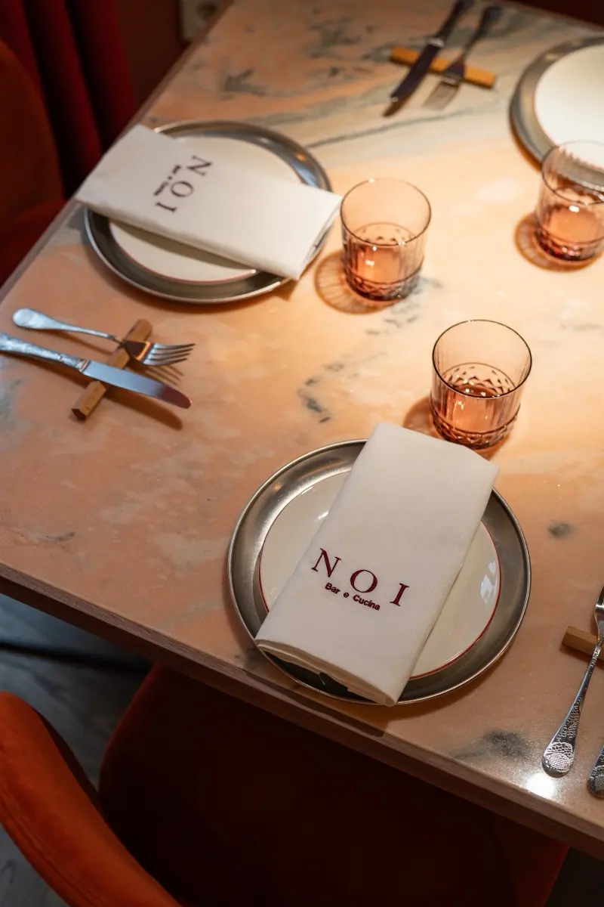
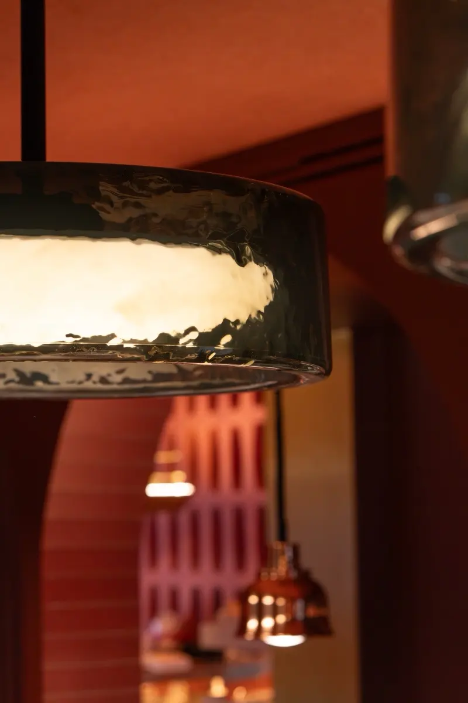
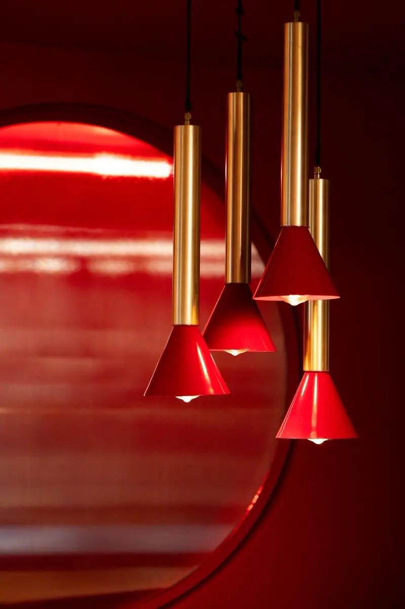
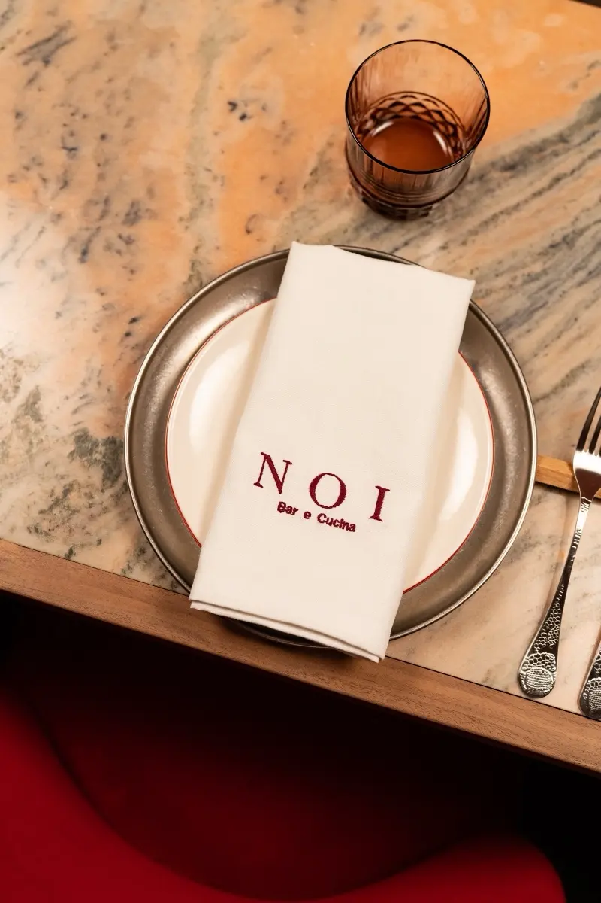
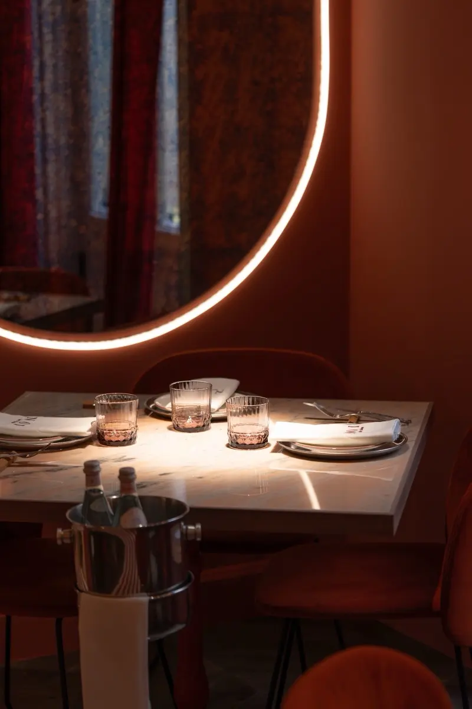
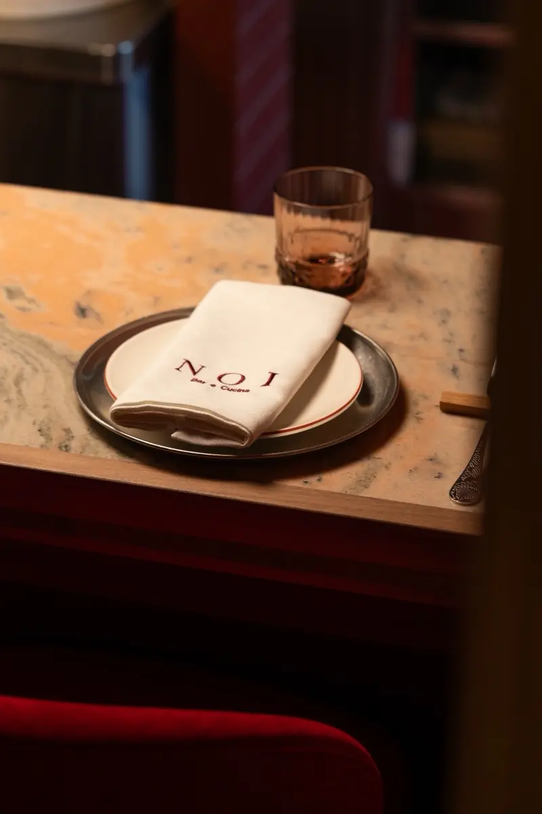
Reservas
Elige dónde quieres sentarte y consulta la disponibilidad al momento.
 Sala verde · Gastronómico
NOI Ristorante
Cocina italiana contemporánea. Técnica, creatividad y sorpresa.
Reservar en el Ristorante
La barra · Cocina de siempre
NOI Bar e Cucina
Cocina italiana auténtica, generosa y sin artificios. Para compartir.
Reservar en Bar e Cucina
Sala verde · Gastronómico
NOI Ristorante
Cocina italiana contemporánea. Técnica, creatividad y sorpresa.
Reservar en el Ristorante
La barra · Cocina de siempre
NOI Bar e Cucina
Cocina italiana auténtica, generosa y sin artificios. Para compartir.
Reservar en Bar e Cucina
¿Grupos, eventos o una petición especial? Llámanos al 910 694 007 o escribe a info@restaurantenoi.com